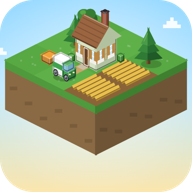
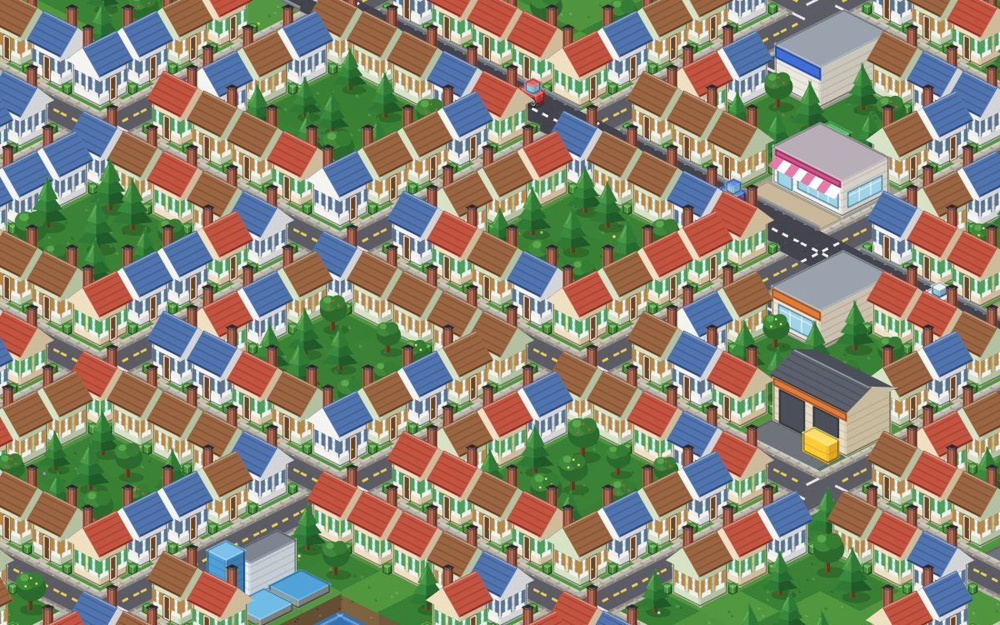
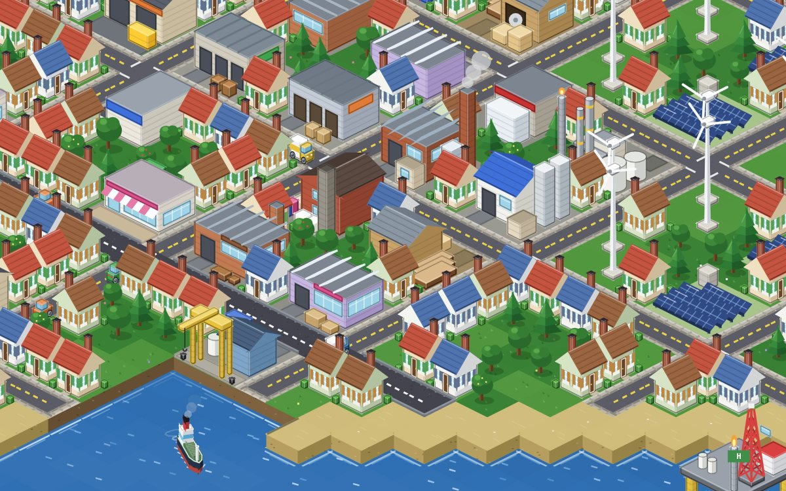
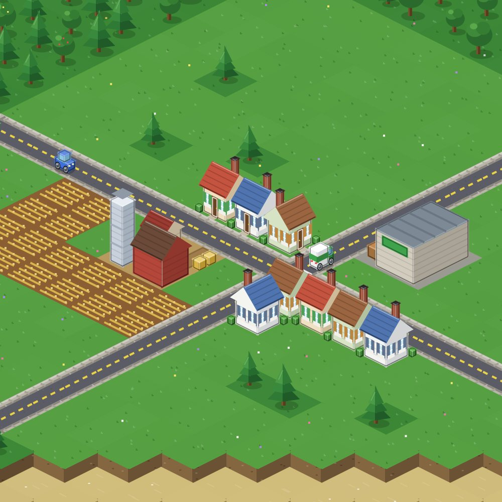
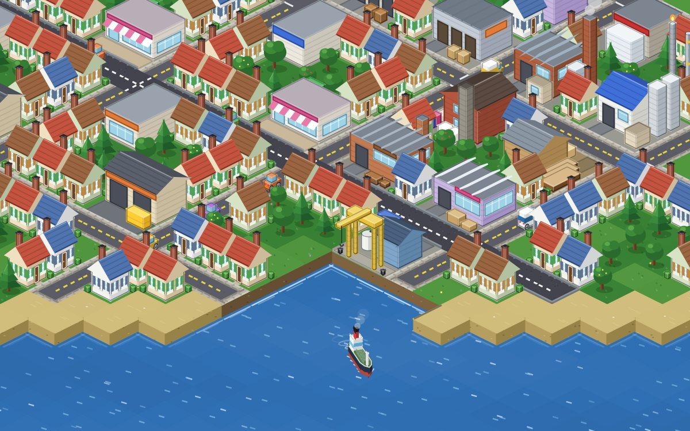
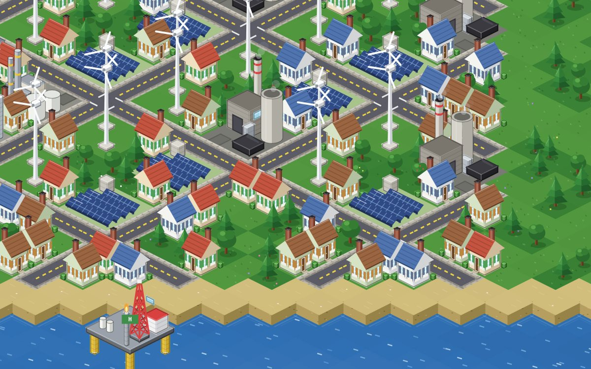

Ciudad viva
Los habitantes llegan en coche desde fuera del mapa, buscan casa y van a trabajar a tus empresas. Sin trabajadores cerca, la producción se para.

SUPPLYVILLEConstruye la ciudad. Gestiona la cadena de suministro.
Un city builder isométrico retro donde cada pan del supermercado empezó como trigo en una granja. Carreteras, fábricas, furgonetas, barcos, electricidad y agua: tú decides cómo funciona todo.
Nada aparece de la nada: cada producto viaja por tus carreteras, desde la materia prima hasta la tienda.
Los habitantes llegan en coche desde fuera del mapa, buscan casa y van a trabajar a tus empresas. Sin trabajadores cerca, la producción se para.
Agricultura, ganadería, lácteos, carne, madera, muebles, textil y ropa. Más de 50 productos, cada uno con su receta.
Furgonetas con carga mixta, almacenes, destinos elegidos por ti y reparto en porcentajes. Las rutas buscan el camino más rápido.
Centrales eólicas, solares y de carbón, red de baja y alta tensión, torres, subestaciones y compra-venta de electricidad fuera del mapa.
Pozos, depuradoras, tuberías bajo las calles y desagües al mar. Pulsa U para ver el subsuelo de tu ciudad.
Plataformas en el mar, petroleros y portacontenedores que navegan entre puertos hasta la refinería.
Autopistas, sentido único, puentes, túneles bajo las montañas, autobuses... y algún que otro accidente.
Islas, montañas, bosques y costas distintas en cada partida, desde 128×128 hasta 1024×1024 casillas.
Todo dibujado en código, píxel a píxel, en estilo retro.





Supplyville lo estoy creando yo solo, en mi tiempo libre. Si te gusta el proyecto y quieres verlo crecer más rápido, una pequeña donación me ayuda muchísimo a dedicarle más horas y añadir nuevas funciones.
Es totalmente voluntario: el juego seguirá avanzando igual. ¡Gracias por estar aquí!
♥ Donar con PayPal